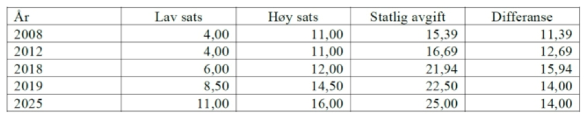

Kraftig økning i NO
x
-avgiften
Styret i NO
x
-fondet har besluttet å øke innbetalingssatsene betydelig i 2019.
•••
Av Linn Therese Skår Hosteland,
linn@kystrederiene.no
linn@kystrederiene.no
Lav sats, som også omfatter skips-
farten, øker til 8,5 kr per kg NO
x
fra
2019, fra 6 kr per kg i år. Høy sats,
som gjelder for olje- og gassvirksom-
het på sokkelen øker til 14,5 kr per
kg, fra 12 kr per kg.
Fra 2020 varsles det videre en øk-
ning til 11 kr per kg på lav sats og 16
kr for høy sats. Basert på det vi vet er
det godt håp om at avgiften deretter
vil stå uendret ut avtaleperioden, til
og med 2025. Til sammenligning er
fiskal NO
x
-avgift per dags dato 21,94
kr per kg NO
x
.
Det er ulike årsaker til den kraftige
økningen satsene til NO
x
-fondet etter
2018, og at lav sats øker mest. Det er
behov for å øke pengestrømmen til
fondet av primært to årsaker. Den
ene
er at de NO
x
-reduserende til-
takene blir mer kostbare enn tidligere
estimert
.
Den andre er at en ak-
tivitetsøkning gir behov for større
NO
x
-reduksjoner enn tidligere
estimert for å nå utslipps
målene i
NO
x
-avtalen 2018-2025.
Tabellen under illustrerer lav og
høy sats til NO
x
-fondet for utvalgte år
(forventet 2025), samt den offisielle
NO
x
-avgiften til staten (prognoser for
2019 og 2025). Den siste kolonnen
viser differansen mellom den satsen
som skipsfarten betaler (lav sats) til
NO
x
-fondet, og den statlige avgiften.
Det er viktig å merke seg at det er
store muligheter for at det ikke blir
noen ny
NO
x
-avtale etter 2025, og at
alle aktører da kun vil stå overfor en
statlig avgift.
Selv med økningen i avgiftene til
NO
x
-fondet, vil styret i fondet i større
grad fremover måtte prioritere mel-
lom ulike søknader. Det er tvilsomt
nok midler til alle søknader. Det vil
også kunne være aktuelt å justere
ned en del av støttesatsene
.
Det er
derfor svært viktig at medlemmer av
Kystrederiene nå vurderer
muligheten for tiltak på eksisterende
fartøy og nybygg, som gir støtte fra
NO
x
-fondet så snart som mulig
.
Det vil i tildelingen av støtte skilles
mellom store og små søknader.
Grenseverdi mellom store og små
søknader er 100 mill. kr i støtte.
Som et utgangspunkt for små
søknader fordeles tildeling av midler
ut i tid slik, vist i tabellen under:
•
2018: 200 mill. kr
•
2019: 500 mill. kr
•
2020: 500 mill. kr
•
2021: 400 mill. kr
•
2022: 300 mill. kr
•
2023: 200 mill. kr
•
2024: 100 mill. kr
•
2025: 0
I Q3/2018 var det en økning i ut-
slippene på 680 tonn
NO
x
fra skips-
fart sammenlignet med samme
kvartal i fjor, noe som tilsvarer 6,4 %
økning. Fraktefartøy sto for økningen
av 156 tonn
NO
x
, øvrig skipsfart 224
tonn
NO
x
og resten av økningen
skyldes offshoreskip.
Slik avgiften utvikler seg nå vil det
for eksempel være lønnsomt for alle
som har mulighet til det å installere
SCR-anlegg. I tillegg vil det kunne
være svært attraktivt å vurdere andre
tiltak samtidig med SCR-tiltaket, som
motorbytte og batteripakker. Vi
anbefaler medlemmene om å ta kon-
takt med
NO
x
-fondet for å diskutere
alternativer som finnes for de ulike
fartøyene.
Gjennom Kystredereienes «Pro-
sjekt flåtefornyelse» tas mulighetene
for å nytte
NO
x
-fondet også med i be-
regningene. Det er likevel viktig at
medlemmene nå benytter
mulighetene og søker om støtte for
NO
x
-reduserende tiltak for å oppnå
våre forpliktelser og får utnyttet den
økonomiske støtteordningen
maksimalt.
